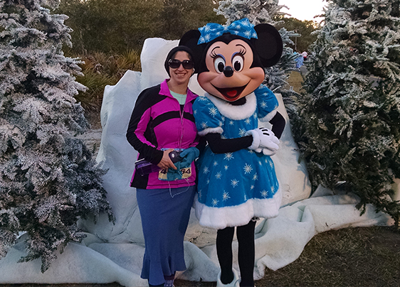

Minnie Mouse is often seen spending time with her husband, Mickey Mouse. Mickey and Minnie made their debut together in the 1928 short Steamboat Willie. Originally, Minnie and Mickey were both voiced by Walt Disney.
Minnie is first referred to as Mickey's girlfriend in 1929's Mickey's Follies where Mickey sang that he "got a sweetie…she's my little Minnie Mouse." Minnie and Mickey house frequently appear together on TV and in animated shorts, and they can be meet together at several Disney parks locations.
Minnie Mouse has always been part mouse, part fashionista. Minnie’s lady-like and sophisticated style has kept her classically beautiful over the years. She’s been a leading lady from 1920 to date, evolving with the changes in style and fashion.
Minnie's iconic polka-dot skirt, which premiered in the 1920's, was inspired by Coco Chanel. Her early look included a stylish pillbox hat, which in the 1940s was replaced by her iconic giant bow. Disney has collaborated with a number of designers to create Minnie-inspired designs, including Lauren Conrad and Vans.
Most recently, Minnie helped Disney celebrate National Polka Dot Day on January 22nd, 2017, with a variety of "Rock the Dots" events, including a VIP dinner.

Minnie Mouse loves making new friends, and she is available to meet Disney Parks guests at several locations. At Walt Disney World Resort in Florida, Minnie can be met at Pete's Silly Sideshow in Magic Kingdom (in the Storybook Circus area of Fantasyland), at Epcot Character Spot in Epcot (in Future World), at Red Carpet Dreams in Disney's Hollywood Studios (on Commissary Lane), and at Adventurers' Outpost at Animal Kingdom (on Discovery Island), where she meets together with Mickey Mouse. At Disneyland Resort, she can be met at Minnie's House (located in Toontown) or in Town Square at Disneyland and in the Carthay Circle area (on Buena Vista Street) at Disney California Adventure.
Minnie can also be found at several character meal locations, both in the parks and at the nearby hotels, and she often stops by to cheer (and meet runners) during runDisney events.